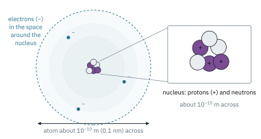
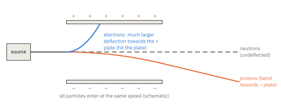
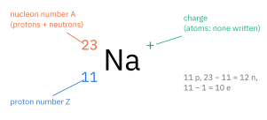
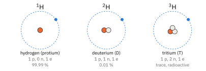
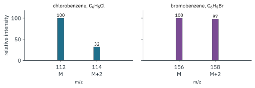

ATOMIC STRUCTURE 1
Topic 1 · Atomic Structure Part 1
On this page
Everything in chemistry, every bond, every reaction, every colour, comes down to what the electrons in atoms are doing. Before we can talk about electrons properly (Part 2), we need to know what an atom is made of and where everything sits. That is what this Part is about.
Key terms
You will need to use these terms precisely, so here they are in one place.
| Term | Meaning |
|---|---|
| proton | a particle in the nucleus with relative charge +1 and relative mass 1 |
| neutron | a particle in the nucleus with no charge and relative mass 1 |
| electron | a particle outside the nucleus with relative charge −1 and relative mass 1/1836 |
| nucleus | the tiny, dense centre of the atom; contains the protons and neutrons |
| nucleons | the particles in the nucleus (protons and neutrons together) |
| proton number, Z | the number of protons in the nucleus of an atom; it identifies the element |
| nucleon number, A | the total number of protons and neutrons in the nucleus of an atom1 |
| isotopes | atoms of the same element with the same number of protons but different numbers of neutrons |
| ion | a charged particle formed when an atom (or group of atoms) loses or gains electrons |
The three subatomic particles
An atom is made of three kinds of particle. The numbers that matter are their charges and masses, and because the real values are tiny and awkward we almost always use relative values.
| Particle | Relative charge | Relative mass | Where it is |
|---|---|---|---|
| proton | +1 | 1 | nucleus |
| neutron | 0 | 1 | nucleus |
| electron | −1 | 1/1836 | outside the nucleus |
The real values (Data Booklet) are: proton and neutron rest mass 1.67 × 10−27 kg, electron rest mass 9.11 × 10−31 kg, and the charge on a proton or electron (the elementary charge) 1.60 × 10−19 C. Divide the proton mass by the electron mass and you get the 1/1836 in the table.2
Where the mass and the charge are
Put the table together with the structure of the atom and you get the picture in Fig 1:
- All the protons and neutrons are packed into the nucleus, so the nucleus holds almost all the mass of the atom and all of its positive charge.
- The electrons, carrying all the negative charge, occupy the space around the nucleus. They contribute almost nothing to the mass but practically all of the volume.
- The nucleus is tiny. It is about 10−15 m across, while the whole atom is about 10−10 m (0.1 nm) across, so the nucleus is roughly 1/100 000 of the atom's diameter. If the atom were the size of a football stadium, the nucleus would be a pea on the centre spot.
So an atom is mostly empty space, with a very small, very dense, positively charged nucleus at its centre.

How do we know? In 1909, Geiger and Marsden, working with Rutherford, fired alpha particles (helium nuclei, 4He2+) at a very thin gold foil. Almost all of them went straight through, which only makes sense if the atom is mostly empty space. A very small fraction bounced back, which only makes sense if all the positive charge and almost all the mass are concentrated in something tiny that the alpha particles occasionally hit nearly head-on. Rutherford called it the nucleus (1911).
Beams of particles in an electric field
Fire a beam of protons, a beam of neutrons and a beam of electrons, all at the same speed, between two charged plates (Fig 2). Each beam is deflected according to its charge and its mass:
- Protons (positive) bend towards the negative plate.
- Electrons (negative) bend towards the positive plate, and much more sharply than the protons.
- Neutrons (no charge) feel no force and go straight through, undeflected.

Why is the electron deflected so much more? The size of the charge on the electron and the proton is the same, so the force on each is the same size. But the electron is 1836 times lighter, so the same force gives it a far bigger sideways acceleration. For particles entering the field at the same speed:
Worked example
A beam of protons is deflected by 6.0° towards the negative plate. Particles of the following species enter the same field at the same speed. Predict the angle and direction of deflection for each: 2H+, 3H+, 4He2+, 3He2+, 16O2−, a neutron and an electron.
(Work out charge/mass for each, relative to the proton's 1/1 = 1. Use relative masses equal to the nucleon numbers; the mass of the electrons gained or lost is far too small to matter.)
| Species | Relative charge | Relative mass | charge/mass | Angle | Towards |
|---|---|---|---|---|---|
| proton, 1H+ | +1 | 1 | 1 | 6.0° | negative plate |
| 2H+ | +1 | 2 | 1/2 | 6.0 × 1/2 = 3.0° | negative plate |
| 3H+ | +1 | 3 | 1/3 | 6.0 × 1/3 = 2.0° | negative plate |
| 4He2+ | +2 | 4 | 2/4 = 1/2 | 3.0° | negative plate |
| 3He2+ | +2 | 3 | 2/3 | 6.0 × 2/3 = 4.0° | negative plate |
| 16O2− | −2 | 16 | 2/16 = 1/8 | 6.0 × 1/8 = 0.75° | positive plate |
| neutron | 0 | 1 | 0 | 0° | undeflected |
| electron | −1 | 1/1836 | 1836 | 6.0 × 1836 ≈ 11 000°! | positive plate |
Two things to notice. First, 2H+ and 4He2+ have the same charge/mass, so they are deflected by exactly the same angle and cannot be separated this way. Second, the electron's "angle" is nonsense as an angle; what it really tells you is that the electron is deflected enormously, and in practice it curves straight onto the positive plate (Fig 2). The proportionality only holds for small angles.
Proton number, nucleon number and counting particles
Every nucleus is described by two numbers:
- the proton number (Z), the number of protons. This is what makes an element that element: every atom with 11 protons is sodium, and nothing else has 11 protons;
- the nucleon number (A), the total number of protons + neutrons. Protons and neutrons each have relative mass 1, so A is (very nearly) the relative mass of the atom.
They are written to the left of the symbol, with any charge at the top right (Fig 3).

Then counting is just three subtractions:
Worked examples
State the numbers of protons, neutrons and electrons in each species. (To answer, you have to find Z from the Periodic Table if it isn't given, then apply the three subtractions. Watch the charge: it changes only the electrons, never the nucleus.)
| Species | Z | A | Protons | Neutrons | Electrons |
|---|---|---|---|---|---|
| 2311Na+ | 11 | 23 | 11 | 23 − 11 = 12 | 11 − 1 = 10 |
| 3517Cl− | 17 | 35 | 17 | 35 − 17 = 18 | 17 + 1 = 18 |
| 3717Cl | 17 | 37 | 17 | 37 − 17 = 20 | 17 |
| 2713Al3+ | 13 | 27 | 13 | 27 − 13 = 14 | 13 − 3 = 10 |
| 3216S2− | 16 | 32 | 16 | 32 − 16 = 16 | 16 + 2 = 18 |
| 5626Fe3+ | 26 | 56 | 26 | 56 − 26 = 30 | 26 − 3 = 23 |
Notice that Na+ and Al3+ both have 10 electrons (the same as a neon atom), and Cl− and S2− both have 18 (the same as argon). Species with the same number of electrons are called isoelectronic. You will meet them again in Part 2: isoelectronic species have the same electronic configuration.
Isotopes
The number of protons fixes the element, but the number of neutrons can vary. Atoms of the same element with different numbers of neutrons are isotopes.
Hydrogen is the simplest case (Fig 4). Nearly all hydrogen atoms have a nucleus that is a single proton, but a small fraction also contain one neutron (deuterium, 2H, often written D), and a trace contain two (tritium, 3H, which is radioactive).

Some other isotopes you will meet:
| Isotope | Protons | Neutrons | Electrons (atom) | Natural abundance |
|---|---|---|---|---|
| 126C | 6 | 6 | 6 | about 98.9 % |
| 136C | 6 | 7 | 6 | about 1.1 % |
| 146C | 6 | 8 | 6 | trace (radioactive) |
| 3517Cl | 17 | 18 | 17 | 75.8 % |
| 3717Cl | 17 | 20 | 17 | 24.2 % |
| 7935Br | 35 | 44 | 35 | 50.7 % |
| 8135Br | 35 | 46 | 35 | 49.3 % |
(Abundances are literature values; they are not in the Data Booklet.)
Same chemistry, slightly different physics
Isotopes of an element have the same number of electrons and the same electronic configuration, and chemical reactions are all about electrons. So isotopes have the same chemical properties: 35Cl and 37Cl both form Cl−, both react with sodium to give sodium chloride, and so on.
They do have slightly different physical properties, because those depend on mass: density, rate of diffusion, and (slightly) melting and boiling points. Heavy water, D2O, melts at 3.8 °C and is about 11 % denser than H2O. Radioactive isotopes such as 14C also differ in their nuclear stability, which has nothing to do with their chemistry.
Because most elements are mixtures of isotopes, the relative atomic mass in the Periodic Table is a weighted average, and is usually not a whole number (Cl is 35.5). You will calculate these in Topic 6 (The Mole Concept and Stoichiometry).

Summary
- Protons (+1, mass 1) and neutrons (0, mass 1) make up the nucleus; electrons (−1, mass 1/1836) occupy the space around it.
- The nucleus is tiny (about 10−15 m in an atom of about 10−10 m) and holds almost all the mass and all the positive charge.
- In an electric field, at the same speed: protons bend towards the negative plate, electrons much more sharply towards the positive plate, neutrons go straight on. Angle ∝ charge/mass.
- Protons = Z; neutrons = A − Z; electrons = Z − charge.
- Isotopes: same Z, different numbers of neutrons. Same chemical properties (same electrons), slightly different physical properties (different mass).
Additional information
- The nucleon number is also called the mass number. ↩
- With the Data Booklet values, (1.67 × 10−27) / (9.11 × 10−31) = 1833. The more precise ratio of the proton and electron masses is 1836, which is the value usually quoted. ↩
- Strictly, the angle is proportional to charge/mass only for small deflections (the tangent of the angle is proportional). This is good enough for comparing ions and protons, but not for electrons, which are deflected so strongly that they hit the plate. ↩